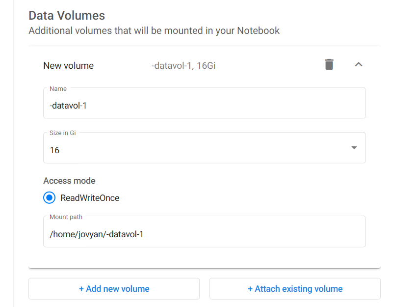
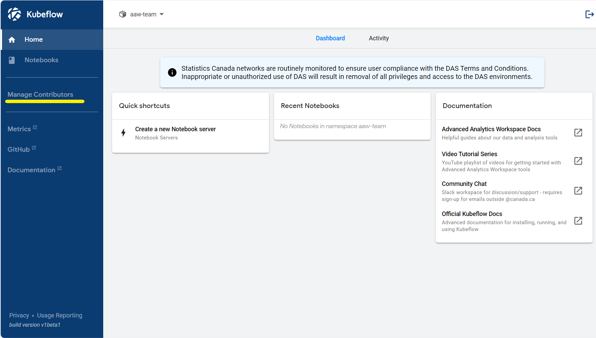

Kubeflow
Getting started with Kubeflow
What does Kubeflow do?
Kubeflow runs your workspaces. You can have notebook servers (called Jupyter Servers), and in them you can create analyses in R and Python with interactive visuals. You can save & upload data, download it, and create shared workspaces for your team.

Let's get started!
Create a Server
Log into Kubeflow
- Log into the azure portal using your cloud.statcan credentials.
Log into the Azure Portal using your Cloud Credentials
You have to login to the azure portal using your statcan credentials.
first.lastname@cloud.statcan.ca. You can do that here at the azure portal.

- After logging into Azure, log into kubeflow
Why am I getting "Missing url parameter: code"?
If you try to log into kubeflow and you get the message
Missing url parameter: code
It is because you are signed in with the wrong Azure account. You must sign in with your cloud credentials.

- Navigate to the Jupyter Servers tab

- Then click + New Server
Configuring your server
-
You will get a template to create your notebook server. Note: the name must be lowercase letters with hypens. No spaces, and no underscores.
-
You'll need to choose an image You will probably want one of
- Machine Learning
- Geomatics
- Minimal

- If you want to use a gpu, check if the image says cpu or gpu.
CPU and Memory
-
At the time of writing (April 21, 2020) there are two types of computers in the cluster
-
CPU: D16s v3
(16 vcpus, 64 GiB memory) - GPU: NC6s_v3
(6 vcpus, 112 GiB memory, ? GPUs)
Because of this, if you request too much RAM or too many CPUs, it may be hard or impossible to satisfy your request.
In the future (possibly when you read this) there may be larger machines made available, so you may have looser restrictions.
Use GPU machines responsibly
There are fewer GPU machines than CPU machines, so use them responsibly.
Storing your data
- You'll want to create a data volume! You'll be able to save your work here, and if you shut down your server, you'll be able to just remount your old data by entering the name of your old disk. It is important that you remember the volume's name.

Check for old volumes by looking at the Existing option
When you create your server you have the option of reusing an old volume or creating a new one. You probably want to reuse your old volume.
And... Create!!!
- If you're satisfied with the settings, you can now create the server! It may take a few minutes to spin up depending on the resources you asked for. (GPUs take longer.)
Your server is running
If all goes well, your server should be running!!! You will now have the option to connect, and try out Jupyter!
Share your workspace
In kubeflow every user has a namespace. Your namespace belongs to you, and it's where all your resources live. If you want to collaborate with someone you need to share a namespace. So you can do that either by sharing your own namespace, or more preferably, by creating a team namespace.
Create a new shared namespace
The link to create a new namespace is here - TODO THERE IS NO LINK YET.
Manage contributors
You can add or remove people from a namespace you own through the Manage Contributors menu in kubeflow.

Now you and your colleagues can share access to a server!
Now you can share a server with colleagues! Try it out!